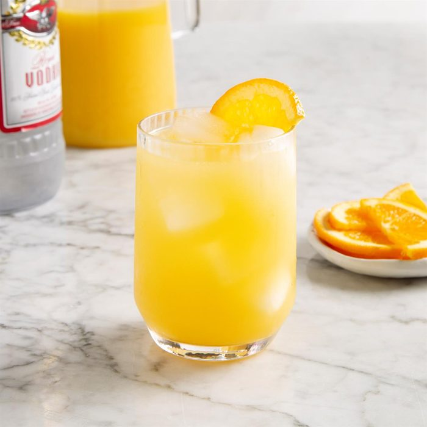

Screwdriver
Ingredients
1/2 to 3/4 cup ice cubes
2 ounces vodka
3 ounces orange juice
Orange slice
Directions
Place ice in a rocks glass. Pour the vodka and orange juice into the glass. Garnish with orange slice.
Enjoy!